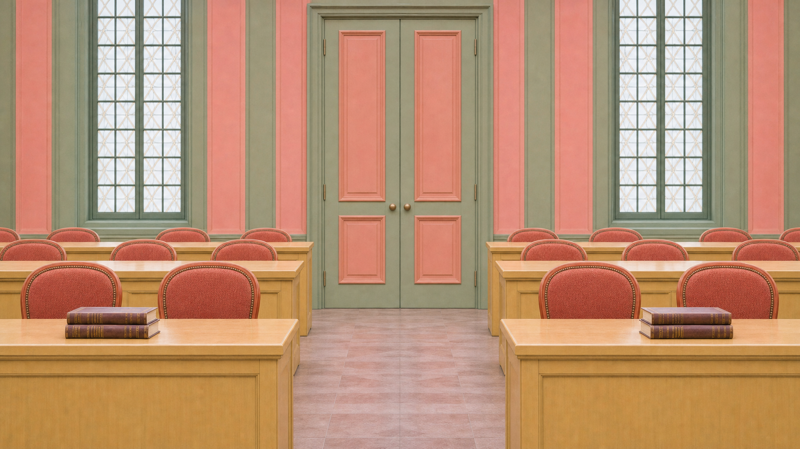
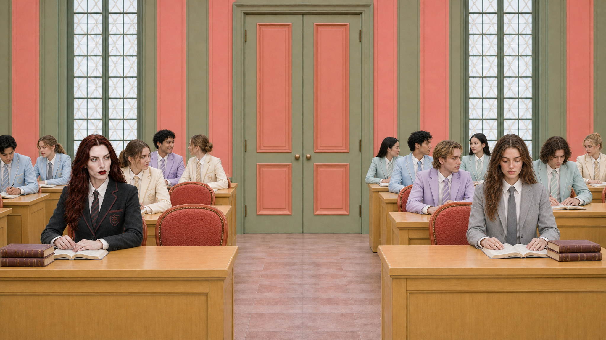

S08-END · Land on Linney
Camera & blockingPart of shot 08, not an extra cut. Start on Vivienne →

Exact input references




Full still prompt · GPT Image 2.6 sunburst (OpenRouter)
Create a single new photographic 16:9 still: the END FRAME of a true camera PAN to the right, the held landing frame. One image only, no panels or text. INPUT ROLES: Image 1, the original empty classroom plate, is the authority for architecture, honey-yellow desks, coral chairs, sage trim, salmon wall panels, leaded windows, soft daylight and the smooth clean photographic finish. Image 2, Linney's sheet, controls her exact adult freckled face, blue eyes, long tousled brown hair and plain light-grey blazer, white shirt and grey tie, with no crest. Image 3 controls the background students' pastel house blazers. Image 4, the S08 start frame, is camera reference ONLY: same tripod position, same camera height at seated eye level, same lens, same exposure and depth of field. Image 5, the classroom wide, is geography reference ONLY: two separate front desks, the clear center aisle, the rear double door at center, Linney in the outer right seat of the right front desk with the inner seat beside her empty. CAMERA, the essential point: the tripod does NOT move. It stands in front of the LEFT front desk, where the S08 frame was taken, and only rotates right by about 45 degrees. So this landing frame looks DIAGONALLY across the center aisle toward the right front desk. Linney is about three to four metres from the lens, therefore SMALLER than Vivienne was in S08: a medium-wide view of her from about the knees or seat up, with the whole right desktop, and floor visible. Because the camera looks at her from the front-left, we see her in a three-quarter view: her body and face angle slightly toward frame left, not square to the lens. The right front desk runs diagonally into the frame with converging perspective. The empty coral chair at her desk, the inner seat nearest the aisle, is on frame left of her, closer to camera. On the left part of the frame, the center aisle floor leads back toward the rear wall; the sage-and-pink rear double door is at the far LEFT of the frame, its right leaf open, with Cassius in his charcoal blazer standing small and soft in the doorway. The right leaded window and the right-side rear rows of pastel-uniformed students are behind Linney. No Vivienne in frame, no part of the left desk except possibly a soft sliver at the extreme left edge. Do not relocate the camera to a frontal portrait of Linney; the diagonal perspective of a pan is the point. ACTING: Linney keeps her eyes lowered to her open book; a small tension at her mouth shows she heard the insult. Quiet hurt held in, no tears, no smile, no look at the camera. Hands rest near the open book; two worn plum-brown books with gold spine bands on the desk. Background students stay seated, a few glancing toward the door, softly resolved. FINISH: smooth clean photographic image, soft daylight, pastel salmon, sage, honey-yellow and coral palette. Natural skin and hair, no coarse noise, grain, stippling, gritty grading or oversharpening. Exactly one Linney, one Cassius, natural anatomy. No text, labels, arrows or watermark. A held frame, no motion blur.